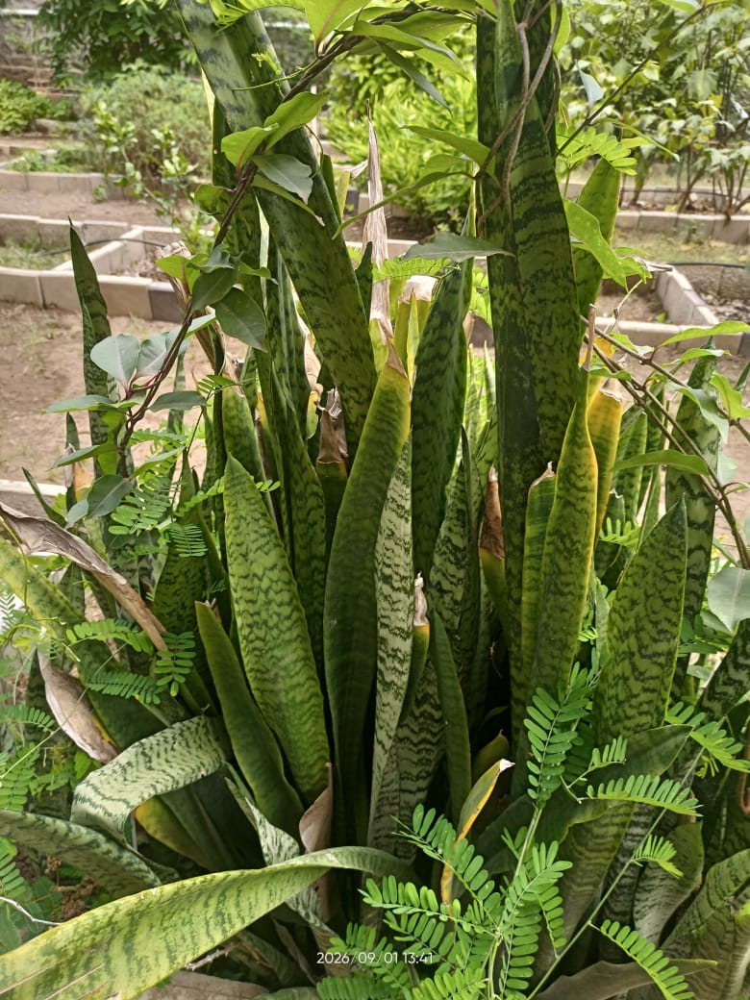

Botanical Name: Dracaena trifasciata
Common Name: Snake Plant
Family: Asparagaceae
Description: A hardy plant with long, upright, sword-shaped green leaves with dark patterns.
Medicinal Uses 1: Traditionally used in some herbal practices, but it is mainly grown as an ornamental plant.
2: Traditionally used for minor skin problems.
3: Used traditionally for general wellness.